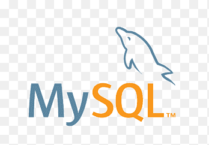

HTML en CSS zijn een van de belangrijkste onderdelen in heel je website.
In het algemeen dan HTML. De code is net een menselijk lichaam de html is opbouw
je skelet, en dan zal css de huid het uiterlijk en alles wat er qua kleur is laat zijn.
CSS is zo een mooi element omdat je het kan gebruiken om kleuren en groottes of zelfs posities van Text kan wijzigen.
Javascript
Javascript geeft je websiet FUNCTIES die je website kunnen verbeteren met als een voorbeeld een pop up animatie.
Daarnaast wordt javascript veel gebruikt voor games of mischien zelfs apps of programmas.
Als je je website een beetje interactie wil geven dan zal je dit moieten toepassen in een HTML bestand.
PHP
PHP is een scripttaal die verbonden is aan de server die ervoor kan zorgen dat er data wordt verzameld of cookiess worden verstuurd.
Als een voorbeeld van deze scenario kan je een welkom script maken met php die ervoor zorgt dat ieder keer als iemand deze website bezoekt
Er een berichtje wodt gestuurd naar de server van je website met php. php staat origineel voor:Personal Home Page Tools.
SQL

Mysql is een programma waar de mogelijkheden van saves wachtwoordenlijsten en data tegenkomt.
Als je Mysql gebruikt op je webiste kan je bijvoorbeeld je blogpagina opslaan of een youtube video posten zonder dat ie weg gaat.
Dit wordt ook gebruikt om accountgegevens in op te slaan met als voorbeeld dus ook hoe de wachtwoord vergeten functie werkt.